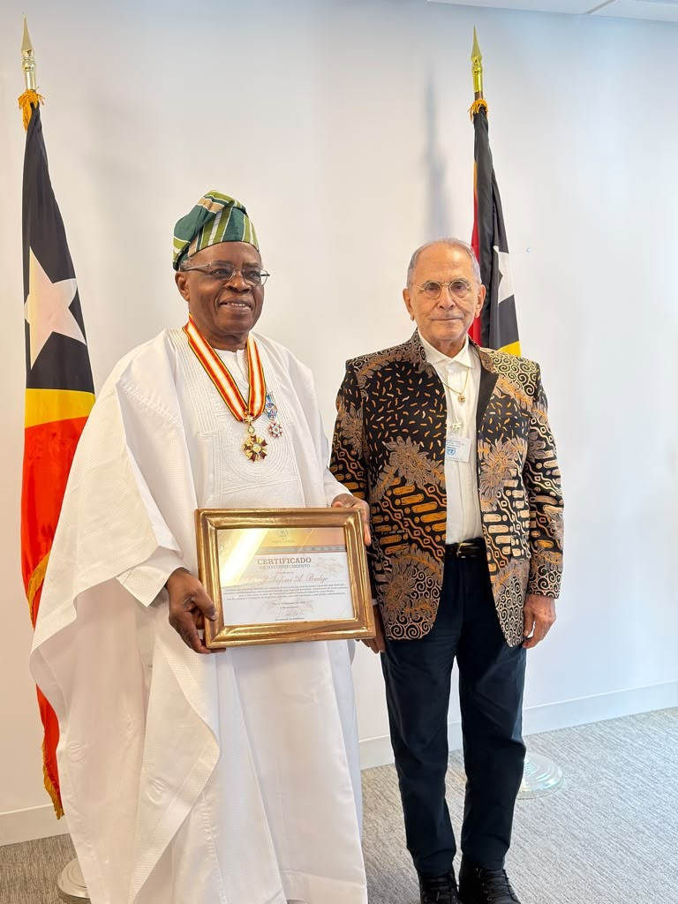

Landmark Projects & Impact
🕊️ The Djibouti Initiative: Designing Peace for Somalia
Prof. Badejo played a primary role in designing, negotiating, and implementing the Djibouti Initiative (2000), which established national governance structures for Somalia after a decade of civil strife. This foundational work earned him the Djibouti National Order of 27 June 1977 in 2025.
.jpg)
.jpg)
.jpg)
Click here to read the UN report on Somalia's peace process and future commitments
📋 Constitutional Restoration in Guinea-Bissau
As Chief of Staff to H.E. José Ramos-Horta (2013–2014), Prof. Badejo worked with the Timorese technical team to restore constitutional order through transparent elections, leading to the Governance Efficacy Amelioration Programme (GEAP), noted by UN Security Council Resolution 2157. In 2026, President Ramos-Horta conferred the Medal of the Order of Timor-Leste.

.jpg)
.jpg)
🔗 Situational Quadruple Nexus (SQN) Framework
Developed the SQN framework analyzing interlinkages between peace/security, development, human rights, and humanitarianism.
🏥 African Union Humanitarian Agency (AUHA)
Designed the operational framework for the AUHA, implementing an African Union Summit Decision with improved Continental Early Warning and Early Action systems across ECOWAS, IGAD, and ECCAS.
🤝 Governance Efficacy Amelioration Programme
Led the conceptualization of post-election governance reform in Guinea-Bissau, noted by UN Security Council Resolution 2157. Coordinated AU, ECOWAS, and US Government in a unified reform effort.